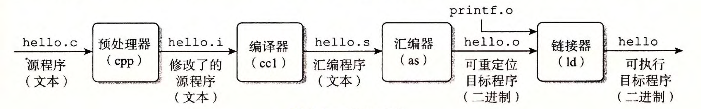
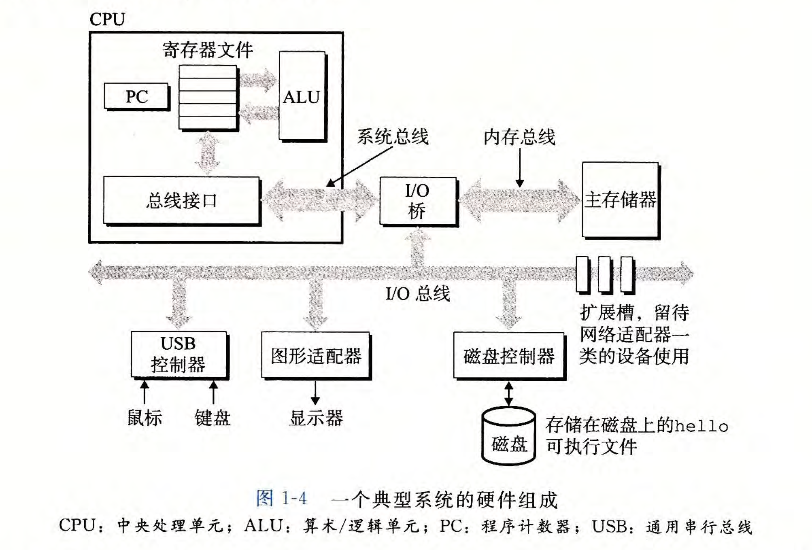
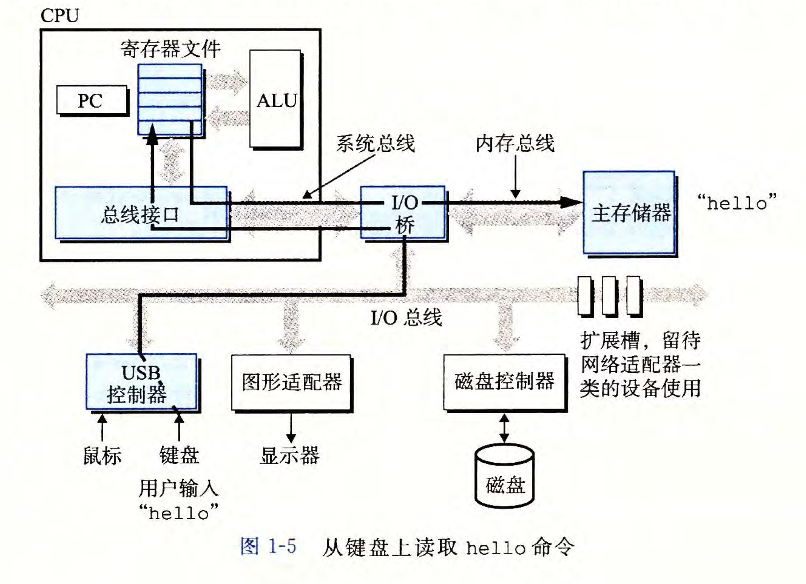
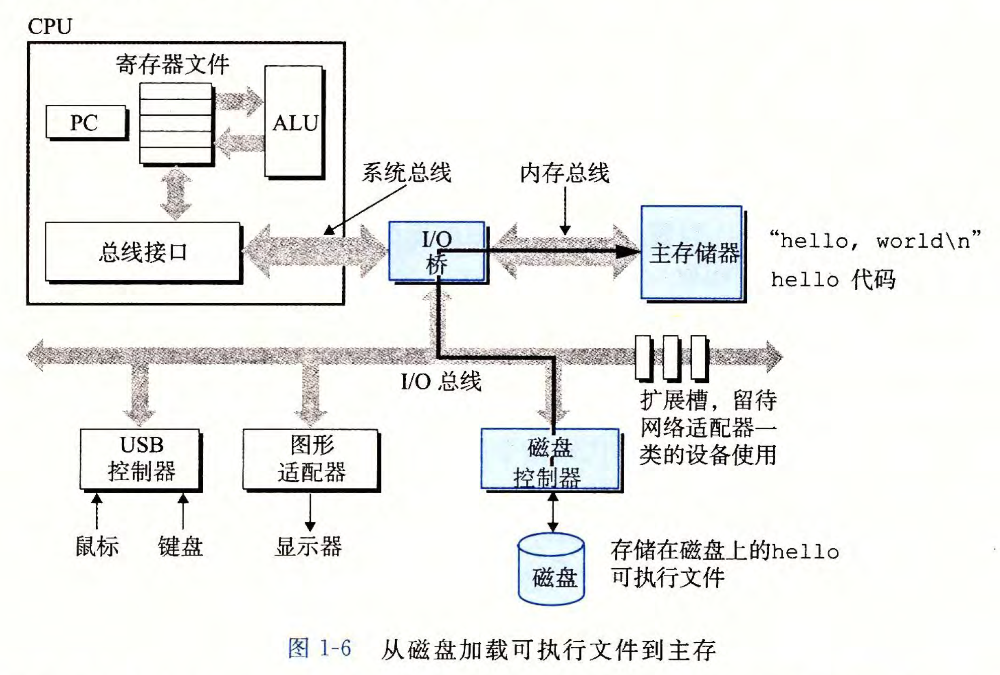
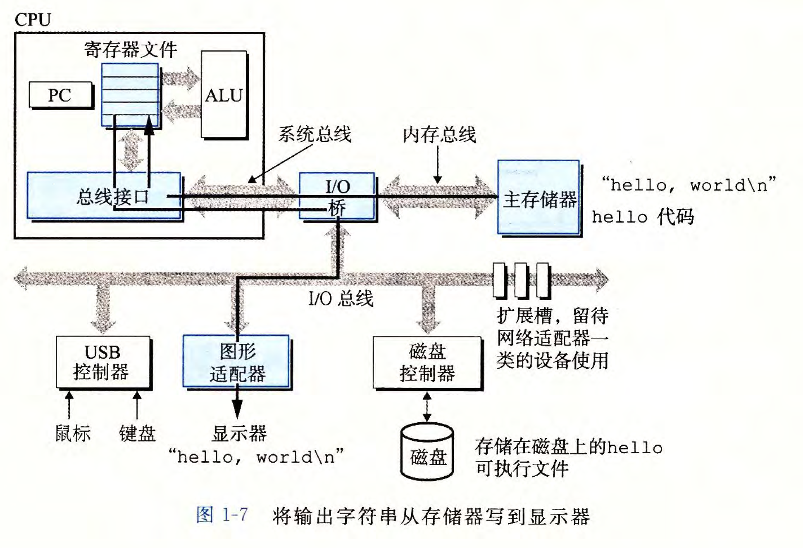
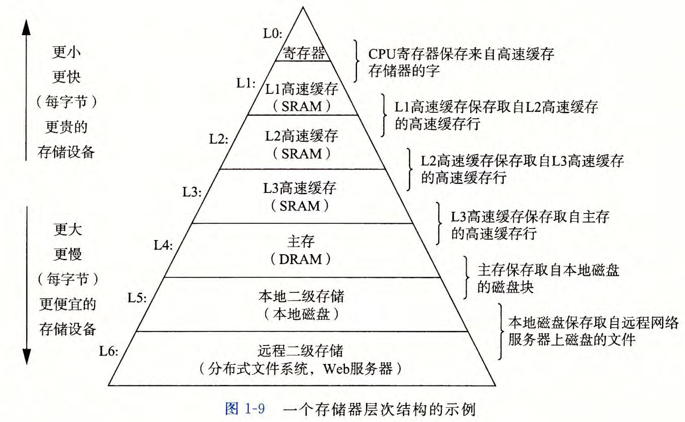
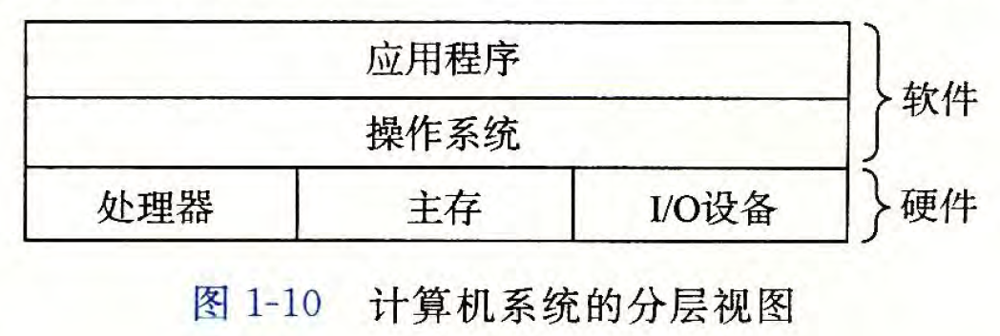
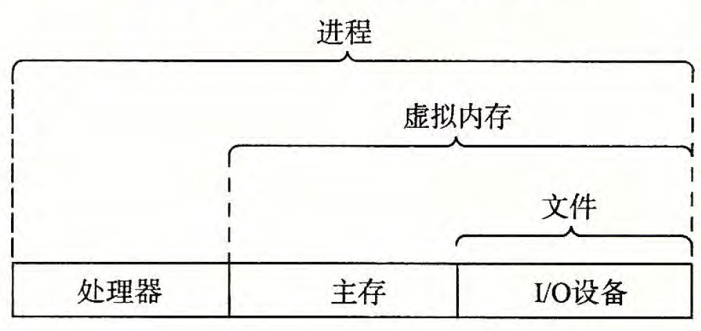
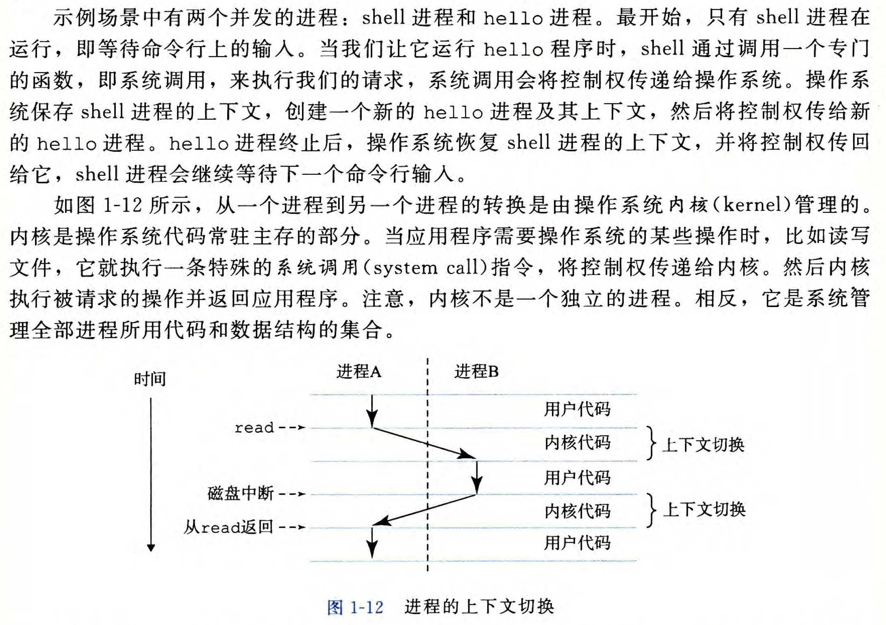
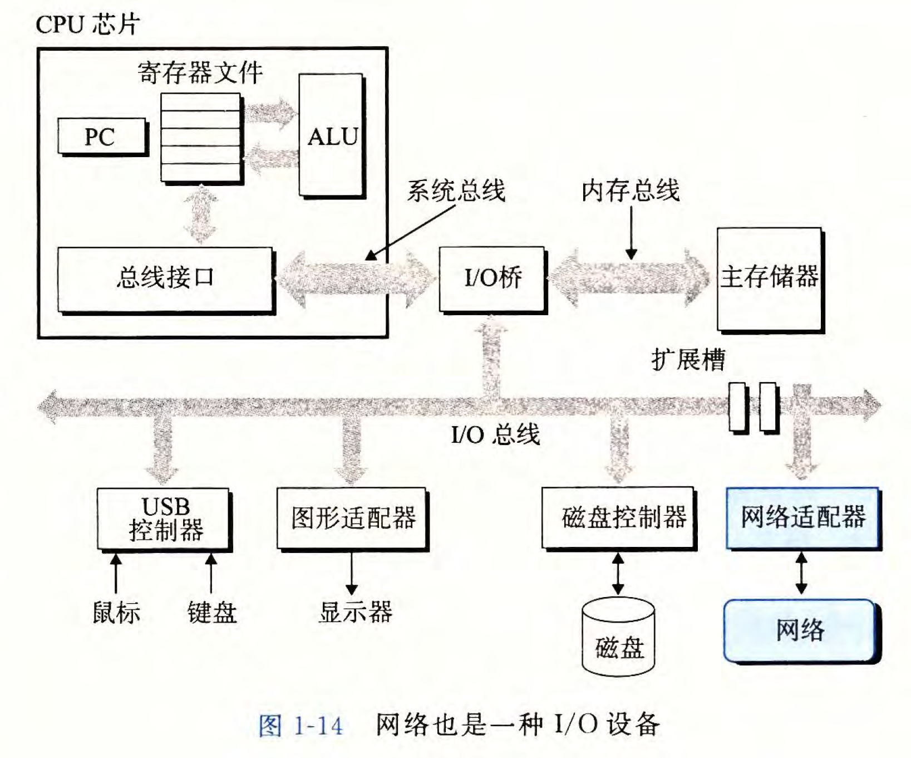

一、计算机系统漫游
本章以程序 hello.c 为例，简述程序是如何被运行的
一、编译过程¶
程序翻译有 四个 步骤：预处理器、编译器、汇编器、链接器

这四个部分一起构成了 编译系统
1. 预处理阶段：¶
预处理器 (cpp) 根据预处理指令 (#开头) 修改原始的 C 程序。
比如对于 #include <stdio.h> ，预处理器会读取系统头文件 stdio.h 的内容，并把它直接插入到程序文本中。
此时文件从hello.c -> hello.i
2. 编译阶段：¶
编译器 (ccl) 将 hello.i 翻译成 hello.s，它包含一个 汇编语言程序。它包含函数 main 的定义
3. 汇编阶段：¶
汇编器 (as) 将 hello.s 翻译成机器语言，并将这些指令打包成一种叫做 可重定位目标程序(relocatable object program) 的格式，并将 hello.s 文件翻译成 hello.o (二进制文本)
4. 链接阶段：¶
链接器 (ld) 负责将函数文件 (例如 printf.o 文件) 和 hello.o 文件合并，成为 可执行文件 hello
1.4 Processors Read and Interpret Instructions Stored in Memory¶
1.4.1 Hardware Organization of a System¶
系统的硬件组成：¶
- 总线
- \(I/O\) 设备 ( in / out )
- 主存
- 处理器
 具体：
-
总线 用于 传送定长的字节块，每次传输的大小即一个 字 的大小。
32位机器总线宽度为32位，64位机器总线宽度为64位。 -
每个 \(I/O\) 设备都通过一个 控制器 或 适配器 与 \(I/O\) 总线相连。
控制器和适配器的区别主要在于 封装方式。
控制器是主板上的 芯片组 ，适配器是一块 插在主板上的卡。
控制器 和 适配器 的功能都是在 \(I/O\) 总线和 \(I/O\) 设备之间传递信息。 - 主存 是一个临时存储设备。
物理上：由一组动态随机存取存储器 \((DRAM)\) 芯片组成。
逻辑上：是一个 线性的字节数组，每个字节都有唯一的地址。 - 中央处理单元 \((CPU)\)，简称 处理器。
是解释（执行）主存中指令的引擎。
处理器的核心是一个大小为 一个字 的 存储设备 （或寄存器），成为 程序计数器 \((PC)\)。
在任何时候，程序计数器都指向主存中的某条机器指令 运行：
围绕：主存，寄存器文件 (register file) 和 算术/逻辑单元 (ALU) 进行。
- 加载：从 主存 复制 一个字节或一个字到 寄存器。覆盖原来的内容。
- 存储：从 寄存器 复制 一个字节或一个字到 主存。覆盖原来的内容。
- 操作：把 两个寄存器 的内容复制到 \(ALU\)， \(ALU\) 对这两个字做 算术运算，并将结果存放到一个寄存器中，覆盖原来的结果。
- 跳转：从指令本身抽取一个 字，并将这个字复制到 程序计数器，覆盖程序计数器中原来的值。
1.4.2 Running the hello Program¶
复制到主存¶


显示输出¶

1.5 Caches Matter¶
高速缓存至关重要¶
问题：系统花费大量的时间进行信息移动。
解决：高速缓存存储器 (cache memory)

1.6 Storage Devices Form a Hierarchy¶
存储设备形成层次结构¶

1.7 The Operating System Manages the Hardware¶
所有应用程序对硬件的操作尝试都必须 通过操作系统
操作系统有两个基本功能：
- 防止硬件被失控的应用程序滥用 - 向应用程序 提供简单一致的机制 来控制复杂而又通常大不相同的低级硬件设备。
操作系统通过几个抽象概念（进程，虚拟内存，文件）来实现这两个功能
- 进程是对处理器，主存，\(I/O\) 设备的抽象表示
- 虚拟内存是对主存，磁盘 \(I/O\) 设备的抽象表示
- 文件是对 \(I/O\) 设备的抽象表示

1.7.1 Processes（进程）¶
进程 是操作系统对一个正在运行的程序的一种抽象。
- 在一个系统上可以同时运行 多个进程，而每个进程都 好像 在独占地使用硬件。
- 并发运行，是说一个进程的指令和另一个进程的指令是交错执行的。 - 无论是在单核还是多核系统中，一个CPU 看上去都像是在并发地执行多个进程，这是通过处理器 在进程间切换 来实现的。 - 操作系统实现这种交错执行的机制称为 上下文切换。
1.7.2 Threads（线程）¶
一个进程实际上可以由多个成为线程的执行单元组成。
多线程之间比多进程之间更容易 共享数据，线程一般来说都比进程更 高效。
1.7.3 Virtual Memory（虚拟内存）¶
虚拟内存是一个抽象概念，它为每个进程提供了一个假象，即 每个进程都在独占地使用主存。
1.7.4 Files（文件）¶
文件就是 字节序列
每个 \(I/O\) 设备，包括磁盘、键盘、显示器，甚至网络，都可以看成是文件
文件为应用程序提供了一个 统一的视图，同一个程序可以在使用 不同 磁盘技术的 不同 系统上运行。
1.8 Systems Communicate with Other Systems Using Networks¶
系统之间利用网络通信¶

1.9 Important Themes¶
balabala